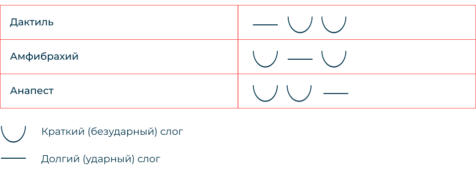

Стихосложение
— способ организации звукового состава стихотворной речи. Выделяют три системы стихосложения: тоническую, силлабическую и силлабо-тоническую
Тоническое стихосложение
Основано на упорядоченном появлении ударных слогов в сихе, колическтво безударных при этом произвольно
Примером тоники яляются стихи былин:
“Как у славного города Чернигова …” (Илья Муромец и Соловей-разбойник)
Силлабическое (слоговое) стихосложение
Основано на примерно одинаковом числе слогов. Расположение ударных слогов в строке относительно свободно
Распространено в языках с фиксированным ударением. В русском языке ударение разноместное, поэтому силлабическое стихотворения выглядели тяжеловесными.
Силлабо-тонические
— стихосложение, основанное на упорядоченном чередовании ударных и безударных слогов
Двусложные размеры стихотворения
Стихотворный размер — способ звуковой организации стихотворного произведения или его отрывка. В силлабо-тонической системе стихосложения определяется сочетанием метра (принципа чередования ударных и безударных слогов) и числа стоп (минимальное повторяющееся число ударных и безударных слогов)
Трехсложные размеры стихотворения
